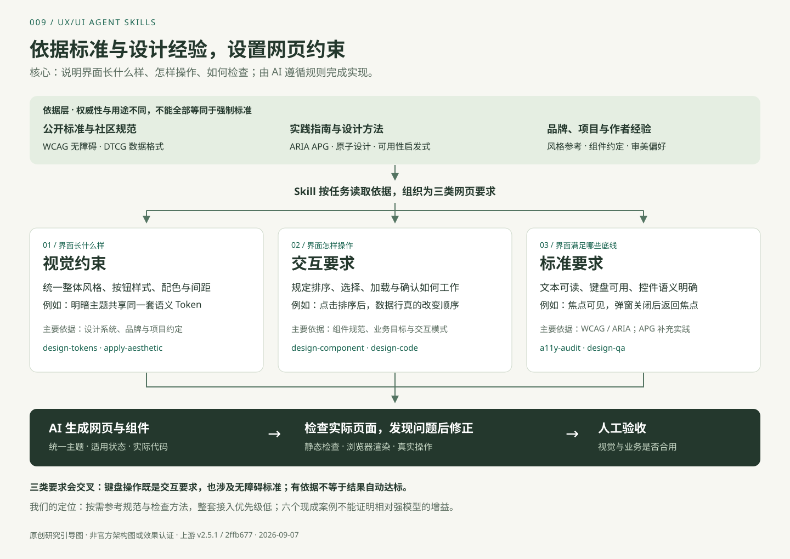

WCAG 2.2 · 可访问性的验收目标
涉及文本对比度、键盘操作、焦点、标签和错误提示等。主要对应 a11y-audit 与 design-qa。通过几项脚本不等于整页全面符合 WCAG。
W3C 原文 ↗STANDARDS → SKILLS → EXAMPLES
它们是三个层次。六个案例是作者随库提供的 HTML 示例，不是六个 Skill，也不是我们实时调用 Skill 生成的结果。下面的对应关系是根据规则内容整理的能力映射，不能视为每个示例的生成日志。

01 / 依据的层级
涉及文本对比度、键盘操作、焦点、标签和错误提示等。主要对应 a11y-audit 与 design-qa。通过几项脚本不等于整页全面符合 WCAG。
W3C 原文 ↗ARIA 定义角色与状态；APG 是非规范性的编写实践指南，提供对话框、复选框等交互模式。弹窗的 Tab 循环、Escape 和焦点返回可在案例中观察。
W3C APG ↗ · 体验弹窗约定 Token 的类型、值与引用表达。它是设计工具间交换数据的依据，不规定页面必须好看，也不强制所有项目采用“原始 → 语义 → 组件”三层。三层是库采用的组织方式。该格式规范不是 W3C Recommendation。
DTCG 2025.10 原文 ↗指导组件拆分、复用和设计评审。它们提供思考方法，不是可自动判定通过的技术标准。主要对应 design-component 与 design-review。
查看库如何采用 ↗框架适配说明帮助模型落地代码；品牌文档提供视觉方向。138 个风格目录不等于 138 套官方标准。相关技能为 design-code、apply-aesthetic 和 migrate-design-system。
框架协议 ↗用于约束作者认为常见的生成问题。它们不具有公开标准的权威性，应按场景取舍；数据后台可以需要等宽卡片与高密度信息。
入口规则 ↗02 / 六个案例如何关联 Skill
design-tokens / design-component / design-code：统一主题与组件实现；a11y-audit：焦点与确认行为。它展示这些规则组合后的形态，不能证明完整业务或生成增益。
brandkit / design-tokens / token-build：集中管理视觉值与明暗映射。演示只加载已有 CSS，不是在现场运行 Token 构建流程。
design-component / design-code：主要、次要、危险操作以及禁用、加载、选中状态。它是规范样板，按钮并非都有业务功能。
design-component / a11y-audit：原生复选、半选、单选互斥、禁用与键盘行为。不能证明整个表单验证或提交链路。
design-component / design-code / design-qa：真实排序和全选联动。案例有行为可供验证；打开案例并不会自动运行 QA 技能。
design-component / design-code / a11y-audit：对话框语义、焦点循环、Escape 和返回焦点。它不实现真实删除业务。
这些例子不覆盖全部 17 项技能，尤其不能展示 Figma 同步、系统迁移、治理、性能分析和截图生成的完整流程。
03 / 大模型更强后，还值不值得用？
这是采用判断，尚无本项目的对照实验支持。“模型知道标准”与“每次遵守同一项目规则并完成验证”是不同的问题，但这也不意味着必须依赖这个库。
如果强模型已能生成合用的按钮、弹窗和明暗主题，大段通用提示可能重复已有能力；额外规则还会占用上下文并限制设计。
团队品牌、既有组件、业务反例和可运行回归检查，提供模型未必掌握的具体依据。但该库的默认检查目标和跳过分支需要适配。
先把它当规范和检查方法参考库。已有成熟组件库与测试体系时，新增价值可能有限；不因技能数量或样例好看就全量采用。
六个展示案例没有无 Skill 基线，不能证明这些效果必须依靠这个库。要判断增益，需要固定需求与模型，在独立会话中做有／无核心规则的对照。